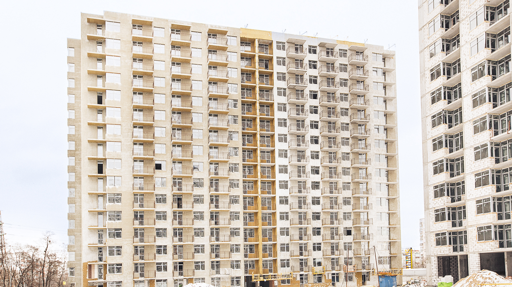

Хід будівництва: Лютий 2018
Шановні інвестори!
Раді Вам надати звіт з будівельного майданчика Варшавського мікрорайону.
Перегляньте фотозвіт в Галереї
• І черга
Будинок А – введено в експлуатацію.
Будинок В – введено в експлуатацію.
Будинок С – введено в експлуатацію.
• ІІ черга
Будинок А1 – введено в експлуатацію.
Будинок В1 – введено в експлуатацію.
Будинок С1 – введено в експлуатацію.
• ІІІ черга
Будинок А2
На завершальному етапі кладка стін та перегородок.
На завершальному етапі штукатурка внутрішніх стін та перегородок.
На завершальному етапі влаштування крівлі.
На завершальному етапі встановлення віконних блоків.
На завершальному етапі встановлення дверних блоків.
Продовжується зовнішнє оздоблення будинку.
Продовжується встановлення внутрішніх інженерних систем.
Розпочато благоустрій та озеленення на території.
В процесі встановлення зовнішніх інженерних мереж.
Будинок В1
На завершальному етапі кладка стін та перегородок.
На завершальному етапі штукатурка внутрішніх стін та перегородок.
На завершальному етапі влаштування крівлі.
На завершальному етапі встановлення віконних блоків.
На завершальному етапі зовнішнє оздоблення будинку.
Продовжується встановлення внутрішніх інженерних систем.
Розпочато благоустрій та озеленення на території.
На завершальному етапі встановлення зовнішніх інженерних мереж.

Переглянути фотозвіт